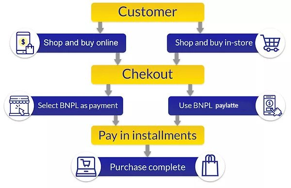
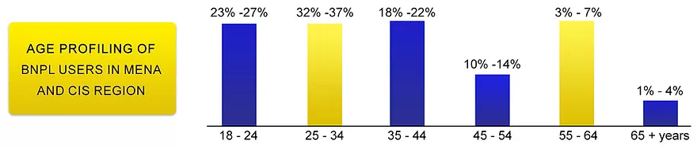
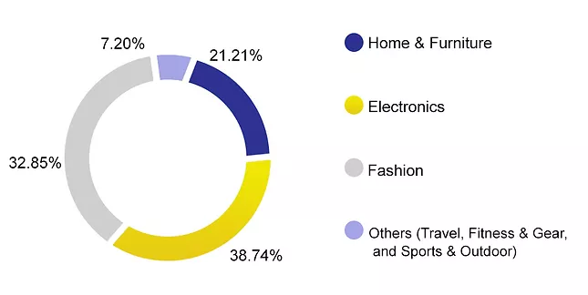

<div class="container-fluid second">
  <div class="row">
    <div class="col-12 prgh">
        <div class="power">
          <h1>Power of Buy Now Pay Later (BNPL)
            in<b>Ecommerce</b></h1>
          <h2>1. What is Buy now, pay later (BNPL)</h2>
          <p>Buy Now Pay Later (BNPL) is the latest payment solution becoming increasingly popular around the globe. While the need to spread the cost of purchases over a longer period has not changed, the way people choose to do so has evolved, especially with the Millennials and Generation Z. Survey results show that around half of BNPL users have stopped using their credit cards (ref). In replacement of traditional credit cards, consumers are opting to use various BNPL payment providers - customers have now the option of upfront credit which can be paid later, either via a deferred payment in full or by splitting the payment across multiple fixed installments with no interest or with some level of interest agreed on upfront and built into the repayment plan. BNPL businesses propose a seamless process for all sales channels - online as well as offline shopping is fully covered. A simple BNPL process flow is presented in the picture below:</p>
          
          
          <p>The various BNPL payment solutions differ in terms of the length of time customers can select to pay for purchases and the process in which the credit check is made.
            The rise in BNPL services has predominantly come around thanks to a series of FinTech's coming to the table as payment platforms and partnering with leading e-commerce retailers to offer interest-free credit at checkout. Buy Now Pay later platforms have gained significant momentum during the coronavirus pandemic owing to a rapid upsurge in digital payments and online shopping. Consumers are rapidly shifting towards BNPL solutions owing to the inclination towards online shopping to reduce the spread of the COVID-19 virus. From the merchants’ perspective, BNPL is gaining traction as both merchants and retailers are looking to capitalize on the boost in online shopping as consumers are preferring contactless shopping to prevent the spread of the virus.
            BNPL is becoming more and more popular as it offers several important advantages for the merchants as well as for the customers. Retailers get paid in full and upfront with these services and they also get significantly higher conversion rates than the conventional counterparts such as credit card payments. Instant access to credit and ease of use, moreover, leads to rapid adoption among end-users. The customer gets immediate approval for their orders, once registered, and a usually interest-free deferred payment. The above-mentioned factors are likely to propel the market growth during the upcoming periods.</p>
          <h2> <b>2. Key players</b></h2>
          <p>n response to the rising popularity and adoption of BNPL solutions over the past few years, new start-ups have emerged offering BNPL services - the key players around the world are Afterpay, Zip, Klarna, Affirm, Laybuy, Splitit, Spotii, Sezzle, Openpay, Clearpay, and ZoodPay. Many of these entities are listed on various stock markets across the globe, with substantial market valuations in the USD billions (eg. Afterpay’s valuation exceeds US$23 billion). 
            Whilst all providers could tend to be seen as the same, yet they are based on several different models based on:
            - Who pays for the service and how?
            - How can a BNPL purchase be initiated?
            - How much can be spent?
            - What is the repayment method?
            - What are the terms and frequency of installments?
            - Which target markets?</p>
          <h2><b>3. The size of BNPL Across the World</b></h2>
          <p>Growing preference for cashless transactions and the search for alternatives to credit cards are boosting the adoption of Buy Now Pay Later solutions around the world.
            The global Buy Now Pay Later platforms market in sales revenue terms was valued at US$ 5 billion in 2017 and is expected to surpass US$ 33.63 billion by 2027, registering a CAGR of 21.2% during the forecast period (2019-2027):
            
            North America held a dominant position in the global BNPL market in 2019 and is expected to retain its dominance throughout the forecast period. The e-commerce industry in North America accounted for US$ 637.8 Billion in 2019 and is expected to exhibit a CAGR of 8.4% during the forecast period.
            Asia Pacific is expected to show significant growth during the forecast period, owing to funding offered by various banks to BNPL platforms.
            Europe, Middle East, and Africa are also expected to exhibit significant growth during the forecast period, owing to the entry of giant retailers in the BNPL industry (ref).
            
            The combined MENA and CIS Buy Now Pay Later platforms market in sales revenue terms was valued at US$ 1.05 billion in 2019 and is expected to exhibit a CAGR of 8.2% over the forecast period to reach US$ 10 billion in 2027. Amongst the regions, the MENA market is expected to be the fastest-growing market. This market was valued in sales revenue terms at US$ 688.0 Million in 2019 and is expected to generate US$ 1 billion by 2027. The market is expected to exhibit a CAGR of 9.9% over the forecast period. The population of MENA is over 450 million, making it a large addressable market for Buy Now Pay Later start-ups. For example, 79% of UAE respondents are open to adopting FinTech solutions, the internet penetration in MENA is around 65%, which is much higher than the global average (Source: Primary and Secondary Research, Coherent Market Insights, 2019-2020).
            Forecasted growth in the BNPL market is driven by the emergence and development of BNPL start-ups as well as more and more noticeable BNPL advantages recognized by both customers as well as merchants. Buy Now Pay Later platforms are offering interest-free credit, no upfront full payments for the goods are affordable for the customers and helps to boost the sales of the goods for merchants. BNPL companies are focusing on developing their solutions with new features and technologies to remain competitive in the market.</p>
          <h2><b>4. BNPL Customer Profile</b></h2>
          <p>Buy Now Pay Later companies to target mobile-savvy customer profiles searching for alternatives to credit cards:
            
            Millennials and Gen Z (aged 18-34) with a stable income.
            Gen X (aged 35-45) inner city or suburban families working full time.
            
            According to Coherent Market Insights analysis, out of the total BNPL users across the MENA and CIS regions, about 35% to 40% are the millennial generation. About 93% to 98% of the millennial generation of the MENA region have access to the internet – whereas increasing time spent on the internet by the millennial generation is expected to fuel the growth of the BNPL markets.
            The share of BNPL users in each age group is presented in the picture below  BNPL is the most popular payment method within the 25-34 years old group:</p>
          
          <p>(Source: Primary and Secondary Research, Coherent Market Insights, 2019-2020)
            BNPL payment methods are easily adaptable and can be proposed for the customer in any of the sales channels to pay for any purchase. Currently, BNPL companies target customers interested in two main product categories - electronics and fashion, but there is plenty of room for expansion to the services segment also.</p>
          ​
          <h2><b>.  BNPL Merchant Profile</b></h2>
          <p>The main target of Buy Now Pay Later companies primarily was the online businesses, but recently it was observed that there is a big opportunity to increase further the BNPL market share by providing services for offline sellers, mostly in developing countries. BNPL as a universal payment solution can easily be used by both online as well as offline merchants. BNPL companies aim to propose their solution to all sizes of merchants – from the smallest to the biggest market players.
            The picture below shows the main product categories, in the MENA and CIS regions, purchased with BNPL payment methods (2019):</p>
          
          <p>(Source: Primary and Secondary Research, Coherent Market Insights, 2019-2020)
            Before the COVID-19 pandemic, BNPL was focusing on the fashion and beauty segments, but the pandemic appeared to have played a part in the increasing use of BNPL services in the electronics segment – it changed customer behavior and encouraged BNPL companies to expand BNPL payments to consumer electronics and thus to expand their product portfolio.
            BNPL companies have also started proposing their solutions in various services sectors like travel, medical and similar.</p>
          <h2><b>6. Benefits for the Customers</b></h2>
          <p>ustomers like the concept of Buy Now Pay Later as it gives them the flexibility to manage their finances, regardless of income level. It is a convenient add-on to debit cards and traditional forms of credit, which allows for postponed payment, spend tracking, and budgeting support. Customers can postpone full payment or pay in parts and plan their finances accordingly. BNPL operates like a cash management tool for them and at no extra costs if used properly.
            BNPL allows consumers to receive goods and services upfront without the need for a separate credit product.
            The majority of BNPL companies propose deferred payment for the purchase without any interest or fees and this is one of the most important benefits for their customers.
            BNPL offers a frictionless checkout: minimal information is requested to be provided by the customers and an instant real-time decision is provided if the purchase is approved. Once customers have used BNPL, their details are automatically stored, making purchases thereafter as convenient and seamless as possible.
            Most BNPL solutions have put some safeguards in place to prevent overspending and to promote responsible purchasing. Unlike traditional credit cards, BNPL solutions try to avoid extensive debt accumulated by consumers who can’t afford their purchases. It may be driven with a more accurate scoring at the sign-up process but also through freezing accounts for customers who fail to make a payment on their current purchases, so they are unable to make further purchases preventing them from getting into a debt spiral. There are also spending limits in place for customers to ensure they are only spending within their reasonable means.
            BNPL creates competition to the traditional lending products which might lead finance companies to consider decreasing their interest rates and thus resulting in end products becoming cheaper for customers.</p>
          <h2><b>7. Benefits for the Merchants</b></h2>
          <p>ne of the biggest issues online retailers face is the dreaded shopping basket paralysis. In fact, a Smart Insights report found that global mobile conversion averages less than two percent for online shopping (ref). Such realities put pressure on BNPL providers to make the onboarding and payment process as simple and stress-free as possible, but they also present an opportunity. Below are some of the key benefits of using the BNPL payments for the merchants:
            
            Increase of the average order value. Buy Now Pay Later offers a tempting incentive for customers to pop another item into their basket. Shoppers that may have usually stretched shopping over several months are now purchasing multiple items in one order.
            Increase of the conversion rate. A recent study carried out by Internet Retailing has shown that 56% of shoppers would buy more online if there were more variation in payment options available. Alongside having that flexibility when it comes to payments, customers can also utilize “try before you buy”.
            Increase of repeated purchases. BNPL provides a positive purchase experience which is so important to customer retention - these positive experiences mean they will come back again and again. In addition, once they know a merchant offers a BNPL option, they will come back to the same merchant for their next big purchase instead of working to find another store.
            Increase of new customers. Customers who tried BNPL at the merchant shop and were satisfied, tend to speak with mates and share findings. A customer satisfied with exceptional services is the most efficient and cost-savvy tool for attracting new customers.
            Reduced costs. Most BNPL companies offer joined marketing campaigns with merchants or promote the merchant on their webpage, this allows the merchant to decrease marketing costs and attract more customers. Using BNPL allows to reduce returns – BNPL customers are less willing to return purchases.
            Zero financial risks. The BNPL provider is collecting the purchase amount from the customer within a couple of months and takes all the risk of that process while the merchant receives a full payment very fast.
            
            BNPL is ultimately a win-win solution. For consumers - it gives more flexibility and more control of what and how they buy. For merchants, the BNPL attracts new Millennial and Gen Z customers, whereas the merchant gets more repeat visits, converts higher average basket sizes that allow the growth of the TPV (Total Processed Value) constantly with lower marketing costs and better returns.</p>
          <h2><b>8. Conclusion</b></h2>
          <p>The oldest Millennials are now almost 40 and Gen Z is just behind them, as some of their older members are coming into their full purchasing power. Both generations are known for their desire for flexibility and convenience, so it is no surprise they are wary of the promises of traditional credit solutions. Thus, enter the BNPL options to successfully disrupt the payments industry, moving customers away from major credit card companies and enabling customers to spread big purchase payments over time without the uncomfortable accrual of interest or related fees. Whether this trend will continue once the Millennials attain even stronger purchasing power remains to be seen, but at least for now, the BNPL payment options are benefiting both retailers and consumers.</p>
          
      </div>
    </div>
  </div>
</div>


  